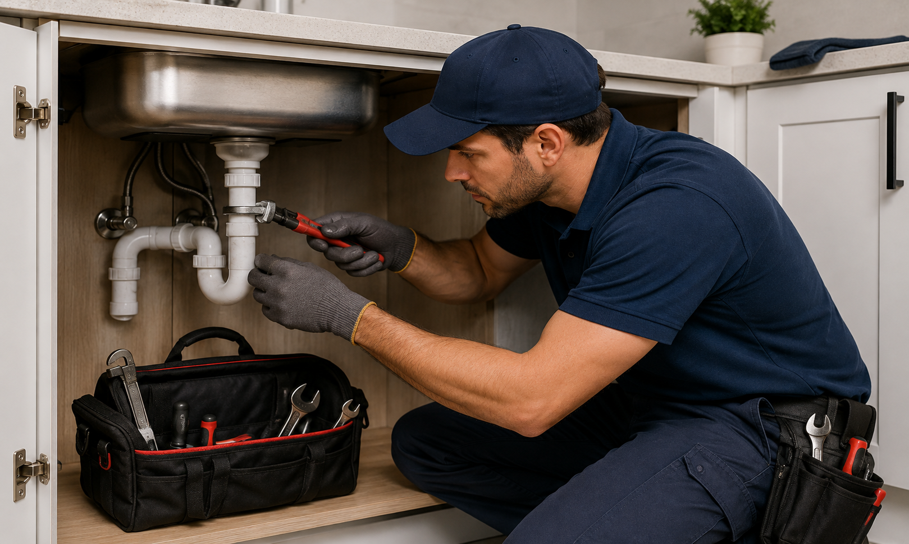
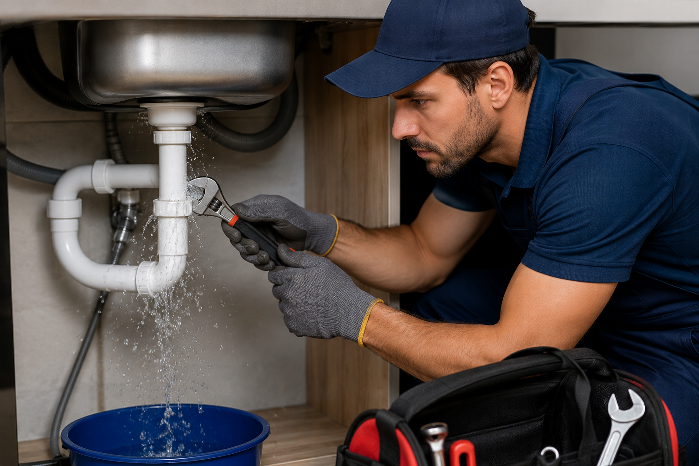
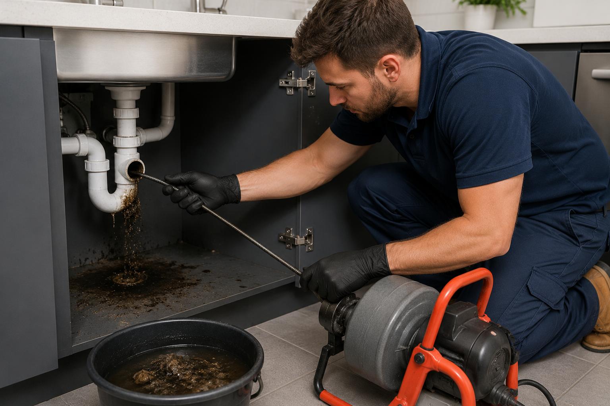
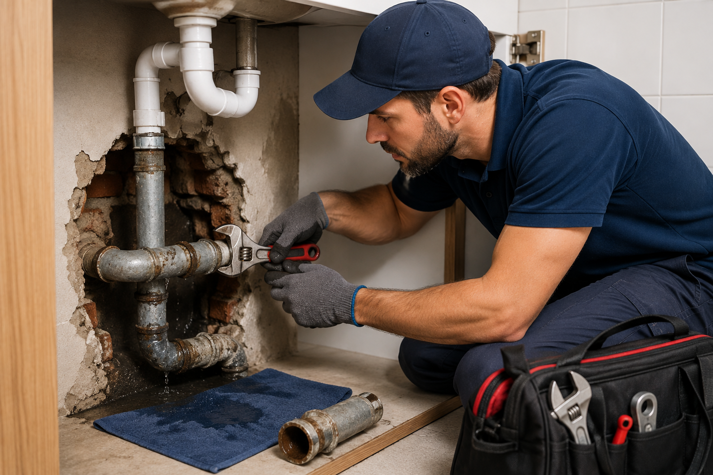
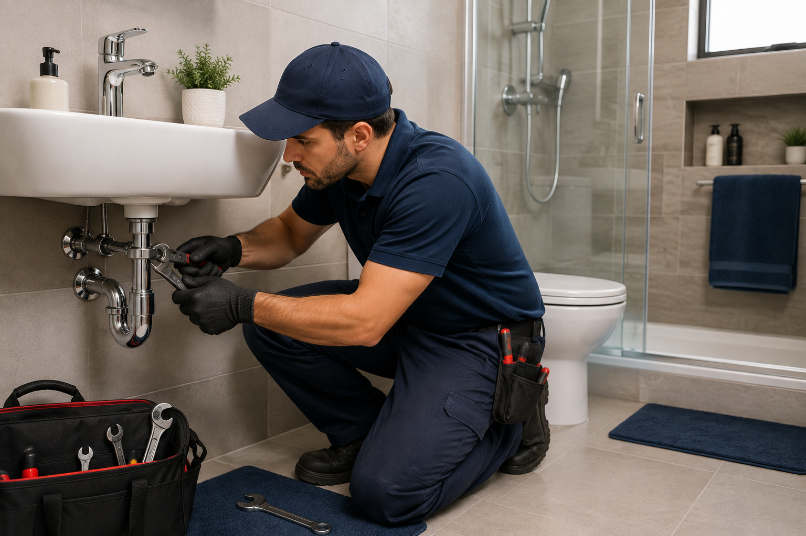
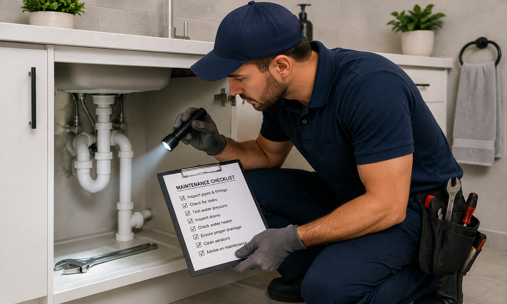

Plumbing Repairs

We assist with common household plumbing problems and repairs to help restore your plumbing system.
Enquire About RepairsDurban Home Fixing Plumbing provides practical plumbing solutions for residential customers in Durban and surrounding areas.

We assist with common household plumbing problems and repairs to help restore your plumbing system.
Enquire About Repairs
We provide assistance with household water leaks and plumbing issues that may require attention.
Enquire About Leak Repairs
We assist customers experiencing blocked drains and related household plumbing problems.
Enquire About Drain Services
We provide plumbing assistance for damaged or problematic household pipes.
Enquire About Pipe Repairs
We assist with plumbing requirements involving bathroom fixtures, fittings and general plumbing maintenance.
Enquire About Bathroom Plumbing
Regular plumbing maintenance can help identify potential problems and keep household plumbing systems operating effectively.
Request MaintenanceSend us an enquiry and provide details about the plumbing service you require.
Make an Enquiry